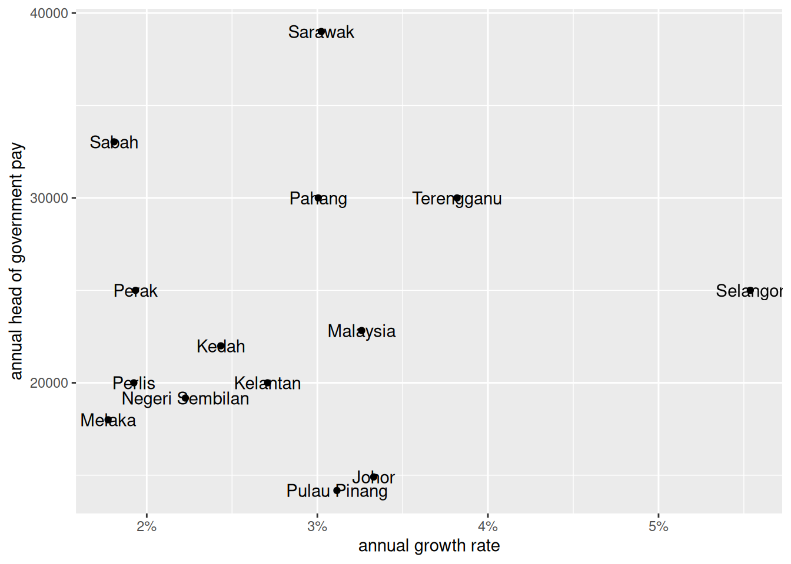

So I thought okay, maybe there’s something that isn’t captured in either of these metrics. Now that data is much easier to access on data.gov.my I thought I’d see if there’s any relationship between MB pay and 2022 values for the Malaysia Well-Being Index.
Yeah, this is very data-miney, but I think it’s quite far from what we saw before, that there’s no relationship. Below are the Pearson correlation coefficients. The index is made up of economic and social components. The economic and overall components are modestly correlated; at the sub-indicator levels, it looks like safety is the most closely linked to MB pay.
It kind of makes sense for politicians to be rewarded for economic welfare and social safety. So is the system … working?
It’s never a good idea to take a metric at face value, so let’s plot the index versus MB pay.
Show setup code
wellbeing |>inner_join(exec_pay, by ="state") |>ggplot(aes(x = overall -100, y = head_executive_pay)) +geom_point() + ggrepel::geom_text_repel(aes(label = state), colour ="grey30") + ggthemes::theme_fivethirtyeight(base_size =9) +scale_x_continuous(labels = \(x) paste0("+", x, "%")) +theme(panel.grid.major =element_blank(), plot.title.position ="plot") +labs(title ="Progress in overall well-being is correlated with MB pay",subtitle ="Head of government's pay versus change in overall Malaysia Well-being Index since 2010",x ="Change since 2010", y ="Head of government's pay" )
Seems fairly legit to me, except for Penang that’s underpaying, probably a legacy of a past administration’s belt-tightening approach to governance.
At this point it’s a good idea to take a step back and think about what the index means. I think the documentation wasn’t very clear, but essentially, each state has the value 100 for 2010. In other words, the index values for each state measure ‘overall progress’ on various indicators since 2010.
The strongest economic indicator has to do with income and distribution, and includes
GDP per capita
poverty rate
Gini coefficient of household income
The correlation between executive pay and this sub-indicator seems modest (0.5493465).
Show setup code
income_index |>ggplot(aes(x = economy_income -100, y = head_executive_pay)) +geom_point() + ggrepel::geom_text_repel(aes(label = state), colour ="grey30") + ggthemes::theme_fivethirtyeight(base_size =9) +scale_x_continuous(labels = \(x) paste0("+", x, "%")) +theme(panel.grid.major =element_blank(), plot.title.position ="plot") +labs(title ="Progress in the income and distribution index is correlated with MB pay",subtitle ="Head of government's pay versus change in the income and distribution index since 2010",x ="Change since 2010", y ="Head of government's pay" )
Okay great, but this doesn’t tell me much about what exactly about state’s economies that heads of government are rewarded for. 2 So I compare the annual growth of a few economic welfare metrics between 2016 and 2022.
GDP per capita growth between 2016 and 2022: 0.6380104
Show setup code
gdp_growth |>ggplot(aes(x =`rat2216`, y = head_executive_pay)) +geom_point() + ggrepel::geom_text_repel(aes(label =`State`), colour ="grey30") +scale_x_continuous(labels = scales::label_percent()) +labs(title ="Are MBs/CMs rewarding themselves for economic growth?", subtitle ="Head of government's pay vs annual growth rate of GDP per capita between 2016 and 2022") + ggthemes::theme_fivethirtyeight(base_size =9) +theme(panel.grid.major =element_blank(), plot.title.position ="plot") +geom_smooth(alpha = .3, method ="lm", se =FALSE)
`geom_smooth()` using formula = 'y ~ x'
Warning: Removed 1 row containing non-finite outside the scale range
(`stat_smooth()`).
Warning: Removed 1 row containing missing values or values outside the scale range
(`geom_point()`).
Warning: Removed 1 row containing missing values or values outside the scale range
(`geom_text_repel()`).
Household income growth between 2016 and 2022: 0.0952284
Show setup code
hhinc_growth |>ggplot(aes(x = rat2216, y = head_executive_pay)) +geom_point() +geom_text(aes(label = state)) +scale_x_continuous(labels = scales::label_percent()) +labs(x ="annual growth rate", y ="annual head of government pay") -> p1

Change in inequality: -0.4524236
i.e. less inequality, more pay
Show setup code
gini_growth |>ggplot(aes(x = rat2216 *100, y = head_executive_pay)) +geom_point() +geom_text(aes(label = state)) +labs(x ="change in gini between 2022 and 2016, percentage points", y ="annual head of government pay", caption ="Scale reversed for clarity. Greater gini is less equal, states are more equal towards the right of the x-axis ") +scale_x_reverse()
This seems to suggest … the system is working?
Honestly, I’m more surprised to find that there seems to be some relationship between state heads’ salaries and their performance, than the other way round. Good to know though.
If anything, I think it makes more sense that politicians in states that progress faster are compensated better, rather than for politicians to be compensated for the work of those than come before them.
Sidenote
On the other hand, I think there’s value in comparing top-of-the-line pay with the pay of those at the bottom. Newly released Data.gov.my data from the Household Income Surveys help us do that. Below I show how many times’ the head of government’s salary is of different percentiles in the household income distribution.
For instance, the Sarawak head of government earns almost 8 times that of the median Sarawakian household, over 13 times that of the bottom 20% of Sarawakian households, and almost 35 times that of the bottom 1% of Sarawakian households.
Show setup code
exec_pay |>inner_join(hies_state, by ="state") |>inner_join(hies_pct, by ="state") |>mutate(across(c(income_median, expenditure_mean, pct_1, pct_20), \(x) head_executive_pay / x),state = forcats::fct_reorder(state, income_median) ) |>pivot_longer(c(income_median, pct_1, pct_20)) |>mutate(name = forcats::fct_reorder(name, value)) |>ggplot(aes(y = state, x = value)) +geom_col() +facet_wrap(vars(name), nrow =1, scale ="free_x") +labs(y ="", x ="", subtitle ="Head of government's salary as multiple of household income metrics")
Footnotes
I didn’t verify if Malaysiakini’s numbers were from administrative data or the salaries surveys↩︎
For comparability with the Household Income Survey, I go with 2016 to 2022.↩︎